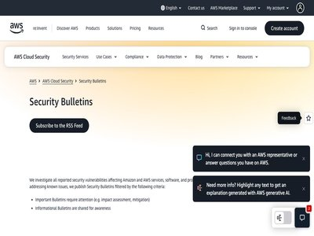
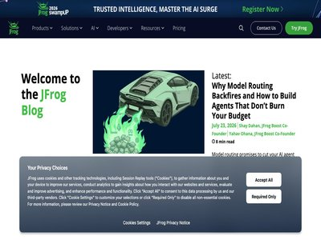
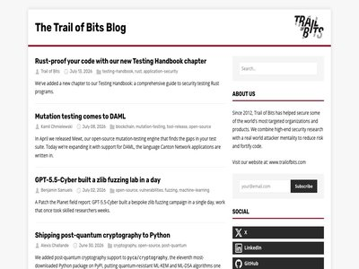
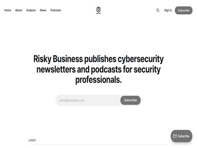
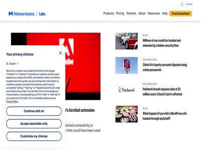
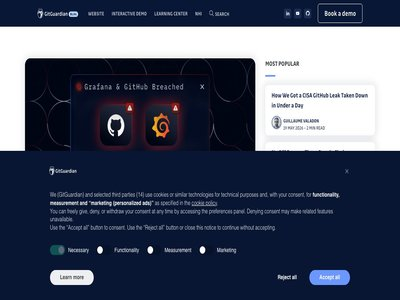
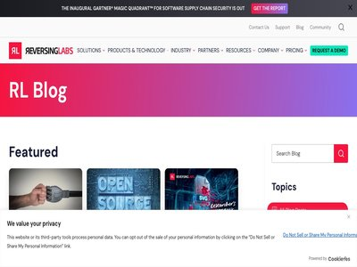
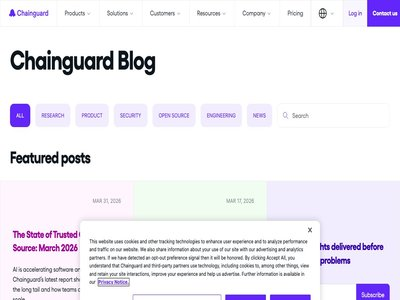

October 03, 2026 · 10 articles

Anthropic's super bug-hunting model Mythos is hardcore good at math, as latest vuln under attack shows
October 03, 2026
Exploitation attempts came from China-hosted IP, VulnCheck researcher says (The Register - Security)

Fake Zoom installer hides macOS backdoor CloudSyncD
October 03, 2026
Jamf Threat Labs details CloudSyncD, a fake macOS Zoom installer that hides a phished password using invisible zero-width Unicode characters. Jamf Threat Labs found CloudSyncD w... (Security Affairs)

MI5 Says China’s MSS Funded Research Involving 100+ U.K.-Linked Academics
October 03, 2026
The U.K.'s domestic intelligence and security agency has warned that more than 100 academics have helped China boost its intelligence gathering efforts on behalf of Beijing's st... (The Hacker News)
Warlock Exploits SharePoint Flaws to Disable Security Tools and Deploy Ransomware
October 03, 2026
The suspected China-linked threat actor known as Warlock is still continuing to weaponize Microsoft SharePoint vulnerabilities, likely both old and new, in attacks targeting org... (The Hacker News)

Danish university DTU breach exposes data of up to 200,000 people
October 03, 2026
The Technical University of Denmark (DTU) says information belonging to up to 200,000 users may have been exposed after hackers accessed its identity and access management syste... (BleepingComputer)

doxx.net Raises $38 Million to Prevent AI Agent-on-the-Internet Misadventures
October 03, 2026
doxx.net’s new ADN platform prevents agentic misadventure while the agent is operating under the user’s authority. The post doxx.net Raises $38 Million to Prevent AI Agent-on-th... (SecurityWeek)
Fortra Patches Critical Vulnerabilities in BoKS
October 03, 2026
The bugs could lead to authentication bypass, shell command execution, and memory corruption. The post Fortra Patches Critical Vulnerabilities in BoKS appeared first on Security... (SecurityWeek)
CVE-2026-90970: Critical GitLab AI Gateway Flaw Fixed
October 03, 2026
GitLab fixes critical AI Gateway flaw that could let authenticated Duo users escape a prompt sandbox and execute commands on self-hosted gateways. GitLab has released patches fo... (Security Affairs)
The State of Cybersecurity in 2026: Key Segments, Insights, and Innovations
October 03, 2026
Featuring: Cybersecurity is being reshaped by the expansion of cloud infrastructure, AI, distributed systems, and increasingly complex digital environments. As organizations man... (The Hacker News)
Antino Backdoor Lets China-Linked UAT-11587 Turn Microsoft 365 Into a C2 Channel
October 03, 2026
Cisco Talos details UAT-11587, a China-linked group using the Antino backdoor and Microsoft 365 as cover to spy on Asian governments. Cisco Talos has been tracking a cluster of... (Security Affairs)
October 02, 2026 · 57 articles

CVE-2026-103956, CVE-2026-103957, and CVE-2026-103958 - Issues in Loom for AWS
October 02, 2026
Bulletin ID: 2026-124-AWS Scope: AWS Content Type: Important (requires attention) Publication Date: 10/02/2026 12:00 PM PDT Description: Loom is an AWS Labs open-source AI agent... (AWS Security Bulletins)
In Other News: $15K iCloud Spoofing Bugs, AI Policy Experts Phished, Adblocker Spies on AI Chats
October 02, 2026
Noteworthy stories that might have slipped under the radar: Kiteworks patches over 100 vulnerabilities, Microsoft publishes 2026 Digital Defense Report, AI finds 24 Android app... (SecurityWeek)
AI Agents Attempt SQL Injection While Searching Government Data
October 02, 2026
AI agents probing US and Canadian government sites made SQL injection attempts while seeking data, but investigators found no evidence of compromise. Autonomous AI agents, worki... (Security Affairs)
Exploited Fortinet FortiMail Zero-Day Calls for Urgent Action
October 02, 2026
CVE-2026-104286 is a critical-severity path traversal vulnerability that could allow attackers to write arbitrary files to the system. The post Exploited Fortinet FortiMail Zero... (SecurityWeek)

Citrix NetScaler RCE zero-day Vulnerabilities
October 02, 2026
What is the Attack? Threat actors are actively exploiting two critical remote code execution vulnerabilities, CVE-2026-88771 and CVE-2026-88772, affecting Citrix NetScaler ADC a... (FortiGuard Labs)

The Year the Vulnerability Backlog Changed Shape
October 02, 2026
As we enter the AI era, few among us have found themselves so entrenched in the throes of the shifting landscape as CISOs. With the threat landscape shifting, they are up agains... (JFrog Security Research)
Warlock Expands SharePoint Exploitation in Critical Infrastructure Attacks
October 02, 2026
The China-based hacking group has been exploiting SharePoint vulnerabilities since July 2025. The post Warlock Expands SharePoint Exploitation in Critical Infrastructure Attacks... (SecurityWeek)

Criminal recruiters want people on your payroll
October 02, 2026
Legitimate employee access can let criminals circumvent security controls that would be difficult to overcome from outside an organization. Routine actions such as information l... (Help Net Security)
The First 24 Hours: What Happens When Ransomware Lands
October 02, 2026
Nazar Tymoshyk from UnderDefense shares his thoughts on what ransomware attacks look like during the all-important opening hours. (Huntress Blog)
Companies Push AI Use But Skip Training and Official Policy
October 02, 2026
New data shows that many workers have employer-sponsored AI accounts and are encouraged to use them, yet 43% haven't been trained in AI. (Huntress Blog)

Friday Squid Blogging: EU is Trying to Fight Unregulated Squid Fishing
October 02, 2026
The EU is recommending import controls to combat unregulated squid fishing in the Southwest Atlantic. I’m not optimistic. As usual, you can also use this squid post to talk abou... (Schneier on Security)

RemoteThreat Bets Security Teams Need to Test What Happens After Defenses Fail
October 02, 2026
The offensive cyber operations startup looks to evolve red teaming beyond traditional methods to simulate attackers' increasingly advanced capabilities. (Dark Reading)
The legal questions raised by agentic AI hacks
October 02, 2026
Experts and policymakers want AI companies to face consequences for agentic hacks. There may not be a clear-cut answer under existing laws and regulations. The post The legal qu... (CyberScoop)
OpenAI alerts 100+ orgs that its 'misaligned models' attempted to break in - or worse
October 02, 2026
Mostly 'routine research tasks,' and 'some involved government websites, which our models often use,' AI giant tells The Reg (The Register - Security)
Dell CSM Flaws Enable Unauthenticated Admin Access and Root on Kubernetes Nodes
October 02, 2026
Dell has released security updates to address multiple critical security flaws in Dell Container Storage Modules (CSM) that could be exploited by bad actors to take over suscept... (The Hacker News)
Kiteworks & Citrix Incidents Show Challenges of Zero-Day Response
October 02, 2026
One company told customers to power down its data-protection platform during a nine-hour window, while the other remained mum on reported attacks prior to releasing a patch for... (Dark Reading)
SWIFT Banking & Government Middleware Enables RCE
October 02, 2026
Patch middleware vulnerabilities now to avoid hardware-based MFA exploits in ultra-sensitive environments. (Dark Reading)
GitLab warns of critical RCE vulnerability in AI Gateway service
October 02, 2026
GitLab warned customers today to immediately patch a critical AI Gateway vulnerability that could let attackers run arbitrary commands on vulnerable instances. [...] (BleepingComputer)

Streamline: custom video pipelines with Cloudflare Stream and Workers
October 02, 2026
Streamline demonstrates how to build long-running, continuous video processing pipelines by pairing Cloudflare Workers and Durable Objects with a containerized media engine. (Cloudflare Blog)
Is Your Organization Ready for 2027's AI Accountability Era?
October 02, 2026
Organizations may face an artificial intelligence (AI) reckoning over the next year. Omdia and Gartner weigh in on how to tackle the governance, security, and value challenges a... (Dark Reading)
Is It Fair to Blame 'Rogue' AI for Security Failures?
October 02, 2026
"Rogue AI" terminology anthropomorphizes LLMs and shifts risk responsibility from vendors. Defenders should treat agents as untrusted, nondeterministic software systems, not sen... (Dark Reading)
Unidentified Flock Cameras in Florida
October 02, 2026
St. Lucie County in Florida discovered ( alt link ) a dozen Flock cameras whose ownership it can’t identify, and that the county government had not permitted. I am reminded of t... (Schneier on Security)
OpenAI's wandering AI agents earn it a California subpoena
October 02, 2026
Plus: Attorneys-general say investigators should have direct access to AI companies' records when things go wrong (The Register - Security)

Microsoft: AI Cuts Post-Compromise Attack Time to Minutes
October 02, 2026
Microsoft has warned that threat actors have gained the advantage over defenders by using AI to enhance the speed and scale of attacks (Infosecurity Magazine)
Mississippi mayor says ransomware incident led city to shut down systems
October 02, 2026
Government services were temporarily disrupted by ransomware in Vicksburg, Mississippi. Mayor Willis Thompson said the FBI and other authorities are investigating. (The Record)
Vulnerability Backlogs Are an Ownership Problem
October 02, 2026
Organizations don't need better vulnerability scanners; they need to know who owns their assets and has the authority and capacity to actually fix them. (Dark Reading)
Power approval set to delay Oracle's Wisconsin AI datacenter
October 02, 2026
Grid connection awaits regulatory approval, putting planned 2027 customer delivery at risk (The Register - On-Prem)
Introducing Web Search API via AI Gateway
October 02, 2026
Cloudflare AI Gateway now supports native web search API integration in partnership with Ceramic.ai, Exa, and Linkup. Developers can now inject real-time web context into model... (Cloudflare Blog)

Integrate Aqua and Jira to Turn Security Findings Into Action
October 02, 2026
TL;DR Finding a security issue is only the beginning. Teams still need to get that issue to the people who can investigate and remediate it without adding another manual handoff... (Aqua Security Blog)
8 major updates to Cloudflare Observability
October 02, 2026
Cloudflare is launching eight major updates that bring logs, traces, analytics, alerts, dashboards, querying, and telemetry export into one observability platform, with simpler... (Cloudflare Blog)
Introducing Cloudflare Traces: follow requests through our entire platform
October 02, 2026
Cloudflare Traces shows how a request moves through security rules, transformations, cache, routing, Workers, and your origin, then follows it across services running anywhere i... (Cloudflare Blog)
Updates on our pledge to make Cloudflare features accessible to everyone
October 02, 2026
A year after pledging to eliminate two-tier product access, Cloudflare has expanded Logpush, multi-account governance, and higher platform limits to all accounts. Here is an upd... (Cloudflare Blog)
Announcing Cloudflare OHTTP Gateway - expanding access to Cloudflare’s privacy-preserving infrastructure
October 02, 2026
We’re announcing the closed beta of a self-serve Cloudflare OHTTP Gateway. We’re also renaming our Privacy Gateway to Cloudflare OHTTP Relay to better distinguish the two products. (Cloudflare Blog)
Follow the thread: a new dashboard to investigate account abuse
October 02, 2026
Fraudsters are increasingly using AI to bypass stateless security checks. Cloudflare's new Account Abuse Protection dashboard uses stateful analysis and edge-generated Hashed Us... (Cloudflare Blog)
Protected Quick Tunnels: simple accountless authentication for your next dev project
October 02, 2026
Quick Tunnels now support email authentication. Add --allowed-mail to one cloudflared command, and only the addresses or domains you list can reach your local app. No Cloudflare... (Cloudflare Blog)
Building for good: How civil society organizations are automating on Cloudflare
October 02, 2026
Some of the world's leading organizations are building the future of non-profit work with Cloudflare. (Cloudflare Blog)
2026 Birthday week: network performance update
October 02, 2026
Cloudflare now ranks as the fastest provider across 74% of the top 1,000 global networks. By incorporating background telemetry from Cloudflare Challenge Pages, we have expanded... (Cloudflare Blog)
Malicious Linux Implants Mimic Asian Mail Security Products
October 02, 2026
A trio of newly discovered backdoors walk and quack like legitimate edge solutions, so it's hard to tell they're not. (Dark Reading)
SMTP is the key: BPFDoor and AVERAT hitting the network edge
October 02, 2026
Overview Rapid7 tracked a set of Linux samples that blend into the software and device conventions of the telecom environments they target. The set spans a newly observed BPFDoo... (Rapid7 Blog)
AI is giving attackers a head start, Microsoft warns
October 02, 2026
Threat actors are using AI to find bugs, build malware and run intrusions faster than defenders can keep up. Microsoft’s 2026 Digital Defense Report, covering July 2025 to June... (Help Net Security)
Dell asks admins to patch max severity CSM flaws as soon as possible
October 02, 2026
Dell has patched two maximum severity vulnerabilities in the Container Storage Modules (CSM) that connect Dell enterprise storage arrays to Kubernetes environments. [...] (BleepingComputer)
OpenAI Parts Ways With Three Safety Researchers Over Sensitive Information Mishandling
October 02, 2026
OpenAI has parted ways with three members of its safety team after they leaked private information in violation of company policies, The Wall Street Journal reported. "We have p... (The Hacker News)
Crypto Scammers Hijack Microsoft’s Official X Account
October 02, 2026
Hackers used the account, which has 13 million followers, to amplify a Clippy-themed cryptocurrency account. The post Crypto Scammers Hijack Microsoft’s Official X Account appea... (SecurityWeek)
Why CISOs Struggle to Answer the Board's Three Hardest Questions, and How to Fix the Report
October 02, 2026
The quarterly board meeting is two weeks out. The security team is pulling exports from the identity provider, the cloud posture tool, the vulnerability scanner, the SIEM and th... (The Hacker News)
In Rare Move, Alleged Iranian State Hacker Extradited to US
October 02, 2026
Amir Barati, an alleged member of the Mabna Institute, was indicted for targeting universities, private organizations, and government entities in the US and abroad. The post In... (SecurityWeek)
How American Political Campaigns Are Using AI-and What They’re Spending on the Tools
October 02, 2026
This essay was written with Nathan E. Sanders, and originally appeared in The Guardian . New campaign finance disclosure data shines a light on which US political campaigns are... (Schneier on Security)

SequenceHash: multihashing for the rest of us
October 02, 2026
Multihashing is one of those cryptographic tasks that’s easy not to think about too much. This is unfortunate, because multihashing is a common stumbling point when cryptographe... (Trail of Bits Blog)
Police Target KillSec Ransomware Group with Arrests and Seizures
October 02, 2026
Investigators have disrupted the operations of ransomware group KillSec and arrested several key suspects (Infosecurity Magazine)
Two Zero-Days Exploited in Attack on Dutch Institute for Vulnerability Disclosure
October 02, 2026
The Dutch Institute for Vulnerability Disclosure reveals agentic AI-powered attack using Zammad zero-days (Infosecurity Magazine)
Android 17 Advanced Protection Locks Accessibility Services to Verified Accessibility Tools
October 02, 2026
Google has announced a new security measure that limits access to Android's accessibility services to verified applications classified as Accessibility Tools when Advanced Prote... (The Hacker News)
Investigators trace an AI agent ‘s path from research task to reconnaissance
October 02, 2026
Asymmetric Security traces rogue OpenAI AI agent activity that probed government sites, accessed staging servers, and evaded sandbox limits. Researchers at Asymmetric Security s... (Security Affairs)
Android 17 makes it harder for spyware to cover its tracks
October 02, 2026
When a journalist suspects their phone has been hacked, the first question is whether any trace of the attack is left. Google has added six features to Advanced Protection in An... (Help Net Security)
Botnets, adversarial attacks and data poisoning top leaders’ AI threat list
October 02, 2026
Companies are putting more money into AI while naming attacks on AI systems as the threat they are least ready to face. PwC surveyed 3,934 business and technology leaders in 71... (Help Net Security)
AI agents keep access to company data after their work is done
October 02, 2026
IT teams responsible for identity security are concerned about AI agents’ ongoing access to company systems and the actions they take on users’ behalf, according to a Delinea’s... (Help Net Security)
New infosec products of the week: October 2, 2026
October 02, 2026
Here’s a look at the most interesting products from the past week, featuring releases from BlackFog, Genea, Vega, and Thales. Vega II brings security-trained AI and lasting memo... (Help Net Security)

Risky Bulletin: Authorities dismantle KillSec group, arrest members across Europe
October 02, 2026
In other news: Ransomware attack could have crippled South Africa's air traffic operations; US sanctions Venezuelan ATM hackers; Chinese APT targets AI experts. (Risky Business News)

AI agent exploits Zammad zero-days in DIVD breach: What we know and how to detect it
October 02, 2026
(Sysdig Blog)
October 01, 2026 · 52 articles
Introducing Clef: our open-source decision models, and new RL fine-tuning platform
October 01, 2026
We are introducing Clef and Clef-flash, open-source decision models hosted on Workers AI for high-speed classification and agentic workflows. Also launching: a new reinforcement... (Cloudflare Blog)
AI policy circles targeted in China-linked phishing operation
October 01, 2026
Cybersecurity firm Proofpoint said TA419 impersonated officials and AI industry figures in an effort to gain access to cloud accounts held by U.S. think tank, university and leg... (CyberScoop)
One year later: Sovereign AI and the fight for choice
October 01, 2026
AI sovereignty is not a zero-sum game, but many governments now believe it is. Cloudflare's answer: more local open-source models, model-agnostic security tools, and a commitmen... (Cloudflare Blog)
Public PoC Released for Apple CoreGraphics Zero-Day CVE-2026-86950
October 01, 2026
Apple patched a CoreGraphics zero-day that may have been exploited in targeted attacks. A public PoC for the flaw is now available. Apple patched a zero-day vulnerability, track... (Security Affairs)

Introducing The Builder Exchange: Inside Security Stories From the Companies Building Fastest With AI
October 01, 2026
Why the industry needs The Builder Exchange Software development traditionally ran through a narrow channel that involved a defined set of engineers, pipelines, and a review pro... (Orca Security Blog)
OpenAI Disrupts Reasoning Extraction Campaign Linked to Moonshot AI Associates
October 01, 2026
OpenAI on Wednesday said it identified and disrupted a coordinated distillation campaign that was designed to illicitly extract protected reasoning from its artificial intellige... (The Hacker News)
Google Rolls Out Gemini 4 Argon to Trusted Cyber Defenders, Plans Guardrail-Free Version
October 01, 2026
Google on Wednesday announced its latest frontier artificial intelligence (AI) model, Gemini 4 Argon, that it said is being rolled out to a set of trusted cyber defenders throug... (The Hacker News)
MetaMask Security Incident Prompts Exit of Affected Ethereum Validators
October 01, 2026
MetaMask on Thursday said it's responding to what it described as an "ongoing security incident" impacting part of its infrastructure. "We are actively addressing and remediatin... (The Hacker News)
ThreatsDay: AI-Powered Zero-Day Chain, 543K Live Secrets, Model Inspection RCE and 13 More Stories
October 01, 2026
This week, the useful words are boring ones: inspect, cache, compile, store, trust. Each sounds harmless. Each can become an attack path when a system does a little more than pe... (The Hacker News)
DeepKeep’s AI Lens flags coding agent data leaks and routes destructive commands for approval
October 01, 2026
DeepKeep has announced AI Lens for Developers, a new extension to the company’s AI usage control and runtime protection modules to secure software developers and their coding ag... (Help Net Security)
WordPress Backdoor Rebuilds Itself After Cleanup Using Files, Database, and Shared Memory
October 01, 2026
Cybersecurity researchers have shed light on a WordPress compromise in which threat actors deployed multiple persistence mechanisms to ensure that the final payload kept returni... (The Hacker News)
MI5 Warns Over 100 Academics Helped China's Espionage Plans
October 01, 2026
MI5 has issued a rare warning to UK academics contributing to the China General Technology Research Institute (Infosecurity Magazine)
Warlock Ransomware Hits Large Spanish, Portuguese Orgs
October 01, 2026
A year-old Chinese threat actor looks like a cybercrime gang, acts like a state-associated APT, and attacks organizations in unexpected places. (Dark Reading)

Pentagon breach exposes Social Security numbers and military records of millions
October 01, 2026
Social Security numbers and other personal details of military personnel and their families were exposed in a months-long Pentagon breach. (Malwarebytes Labs)
Convincing Free Mobile phishing emails appear after data breach
October 01, 2026
Free Mobile customers received very convincing phishing emails after major data breach. (Malwarebytes Labs)
New Huntress View for Security Incident Investigations
October 01, 2026
See how the Huntress SOC runs security incident investigations from first signal to final resolution, including the ones closed as benign. (Huntress Blog)

CrowdStrike Expands Federal SOC Modernization Through CISA-Funded SIEMaaS
October 01, 2026
(CrowdStrike Blog)
Alleged KillSec Ransomware Mastermind a 16-Year-Old
October 01, 2026
Law enforcement from multiple countries collaborated to disrupt a cybercrime operation that has claimed some 500 victims worldwide in the past two years. (Dark Reading)
AI agents hacked the hackers, stealing email addresses from security research org
October 01, 2026
Chained Zammad flaws enabled session hijacking, code execution, and root escalation in seconds (The Register - Security)
Iranian accused of hacking American universities extradited from Montenegro
October 01, 2026
An Iranian national accused by the U.S. of taking part in dozens of breaches involving the theft of academic data and intellectual property has been extradited from Montenegro. (The Record)
Kevin Mandia’s Armadin Raises $255 Million at $2.5 Billion Valuation
October 01, 2026
The Series B brings the AI-powered offensive security startup’s total funding to roughly $445 million only seven months after its public launch. The post Kevin Mandia’s Armadin... (SecurityWeek)
OpenAI software attempted to secretly scrape data from dozens of prominent websites
October 01, 2026
The findings, released Thursday by Asymmetric Security, are just the latest example of rogue behavior spurred by OpenAI’s software. (The Record)
National cyber director: Government-industry collaboration vital to managing AI risks, competition with nations
October 01, 2026
Sean Cairncross talked about regulations, China, pilot projects and more Thursday. The post National cyber director: Government-industry collaboration vital to managing AI risks... (CyberScoop)
Zero Trust Creator Says Model Holds Firm Against AI-Assisted Attacks
October 01, 2026
Fifteen years after coining the framework, John Kindervag insists zero trust still works in the AI era-if you get the implementation right. The post Zero Trust Creator Says Mode... (SecurityWeek)
Osavul Lands $10 Million to Spot Hostile Intent Across Cyber, Physical Domains
October 01, 2026
Hybrid risk intelligence company Osavul has raised $10 million in a Series A funding round led by 33N Ventures. The post Osavul Lands $10 Million to Spot Hostile Intent Across C... (SecurityWeek)

Public Secrets Monitoring: Find a Credential Leak Beyond Your Borders
October 01, 2026
GitGuardian found a public GitHub repo tied to CISA leaking 844MB of live credentials. Agents Analysis flags which public leaks are actually yours. (GitGuardian Blog)

Why the smartest LLMs are not-so-smart pen testers
October 01, 2026
A new benchmark of eight leading AI systems shows that an intelligent model still needs a good context-rich harness. (ReversingLabs Blog)
Microsoft catches hackers exploiting Zimbra bug before disclosure
October 01, 2026
Attackers were probing the mail server flaw weeks before it had a CVE to its name (The Register - Security)
Hacker Conversations: Rob Juncker, a Knock at the Door and a Moral Compass
October 01, 2026
Rob Juncker is chief product and technology officer at Mimecast. Is he a hacker? “Unequivocally yes,” he says. The post Hacker Conversations: Rob Juncker, a Knock at the Door an... (SecurityWeek)
Enterprises Struggle to Prepare for AI and Quantum Threats, PwC Says
October 01, 2026
PwC’s survey found that only 22% of leaders would use fully autonomous AI for cyber defense, while just 21% are implementing quantum-resistant security measures. The post Enterp... (SecurityWeek)
Critical Cisco Catalyst SD-WAN Zero-Day Under Active Exploitation
October 01, 2026
Vulnerability in Cisco Catalyst SD-WAN Manager allows an unauthenticated, remote attacker to access systems with admin privileges (Infosecurity Magazine)
Shadow AI explained: The work shortcut that could leak your company’s secrets
October 01, 2026
An AI shortcut can send confidential work data beyond your company’s control. Here’s how to get the benefits without taking unnecessary risks. (Malwarebytes Labs)
The Day-One Hole in Zero Trust Architecture
October 01, 2026
Zero Trust can verify users once they are established, but onboarding creates a gap where organizations must decide who to trust before strong authentication exists. Specops exp... (BleepingComputer)
Insights from the 2026 Microsoft Digital Defense Report
October 01, 2026
Read highlights from the 2026 Microsoft Digital Defense Report, which reflects a security environment that continues to grow more interconnected. The post Insights from the 2026... (Microsoft Security Blog)
Exabeam brings AI-assisted security investigations to data that must stay on-premises
October 01, 2026
Exabeam has introduced a new wave of capabilities that bring the Agentic SOC to life in the cloud and on-premises environments, combining AI-driven investigation, execution, and... (Help Net Security)
RadarFirst helps teams investigate AI bias, data exposure and unintended actions
October 01, 2026
RadarFirst has announced the general availability of Radar AI Incident Management, a purpose-built solution that helps organizations investigate, manage, and document AI-related... (Help Net Security)
CISO thought he had a 'r3@lg00dp@$$w0rd' but forgot to patch
October 01, 2026
Replacing letters with symbols still doesn’t make it good. (The Register - Security)
Sophos uses agentic AI to show businesses which security fixes deserve funding
October 01, 2026
Sophos has launched Sophos CISO Advantage, an agentic AI-enabled solution that connects security operations to security strategy. The solution gives organizations a picture of t... (Help Net Security)
Huntress Tragic Quadrant: Top Cyber Threats Wrecking Businesses
October 01, 2026
The Huntress Tragic Quadrant ranks the cyber threats hitting businesses most, from RMM abuse to AiTM, ClickFix, using real SOC data. (Huntress Blog)
How AI Is Changing the Roles Required in the Security Operations Center
October 01, 2026
As AI takes on more of the enrichment, correlation, and initial assessment inside the SOC, roles, skills, and KPIs still require deliberate redesign. Security leaders need to de... (Rapid7 Blog)
Cyberattack on major Polish invoicing platform exposes customer data
October 01, 2026
One of Poland’s major online invoicing platforms suffered a data breach that may have exposed information belonging to its users, their customers and business partners. (The Record)
England's schools are getting better at mopping up cyber incidents
October 01, 2026
Two-thirds report immediate recovery, although teachers remain divided over whose job security is (The Register - Security)
Connected Cars Are a Surveillance Platform
October 01, 2026
Researchers at Northeastern University, in collaboration with Consumer Reports , evaluated how much modern cars spy in their drivers: To determine this, CR dug through thousands... (Schneier on Security)
Malwarebytes earns another Top Product award in independent testing
October 01, 2026
Three independent labs, three standout results: a perfect score, top certification, and every threat stopped before it ran. (Malwarebytes Labs)

The Fine Art of Frustrating the Adversary
October 01, 2026
What really frustrates an adversary? Eight Cisco Talos researchers share practical ways to make their next move slower and riskier. From deception and behavioral detection to br... (Cisco Talos)
AI Threats Top Cybersecurity Preparedness Gap, PwC Finds
October 01, 2026
PwC finds global security leaders are most concerned about attacks on AI systems (Infosecurity Magazine)
Losing gamblers pushed to bet more by DraftKings’ AI, report says
October 01, 2026
Betting site DraftKings has been accused of using AI to target gamblers likely to lose more after receiving promotions. The company disputes the findings. (Malwarebytes Labs)

ScreenConnect Client (Ab)used by Attackers, (Thu, Oct 1st)
October 01, 2026
Threat Actors do not always use top-notch techniques or very complex malware to perform their attacks. Sometimes, they just abuse of existing applications... (SANS ISC)
Srsly Risky Biz: "Rogue" AI Isn't Going Anywhere
October 01, 2026
Your weekly dose of Seriously Risky Business news is written by Tom Uren and edited by Patrick Gray and Amberleigh Jack. This week's edition is sponsored by PortSwigger . You ca... (Risky Business News)
With AI agents, runtime is the only place truth lives
October 01, 2026
Runtime security for AI agents: if an agent is compromised, so is its account of itself. Sysdig's founder on the only truth that can't be forged. (Sysdig Blog)

What five years of Chainguard have taught us
October 01, 2026
Chainguard was founded to solve open source’s trust problem. Five years later, that mission matters more than ever in the age of AI. (Chainguard Unchained)
How do you harden an agent skill? The simple file type with serious complexities
October 01, 2026
Learn how Chainguard Factory hardens AI agent skills by detecting malicious behavior, fixing risks, and verifying functionality before release. (Chainguard Unchained)
September 30, 2026 · 1 article
Secure what’s next: Your guide to Microsoft Security at Microsoft Ignite 2026
September 30, 2026
This year at Microsoft Ignite, we spotlight our AI-first, end-to-end security platform designed to protect identities, devices, data, applications, clouds, infrastructure, and t... (Microsoft Security Blog)